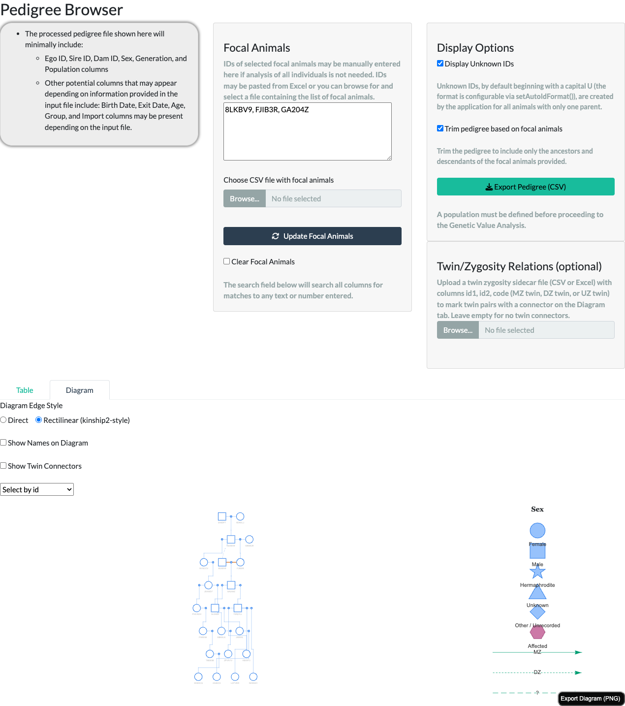
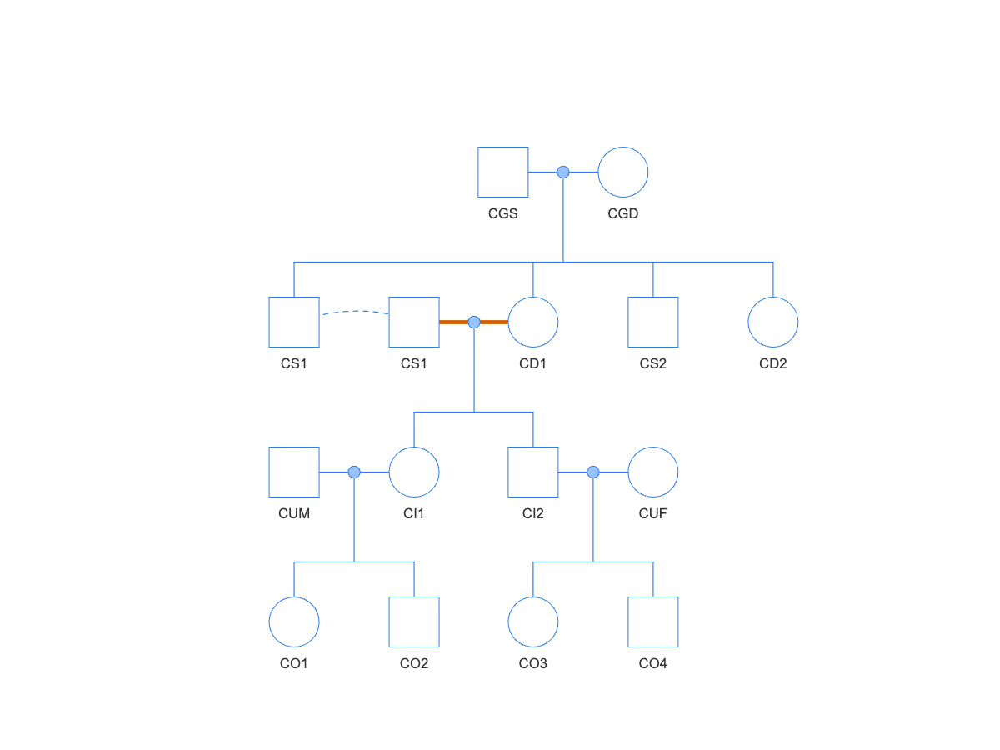
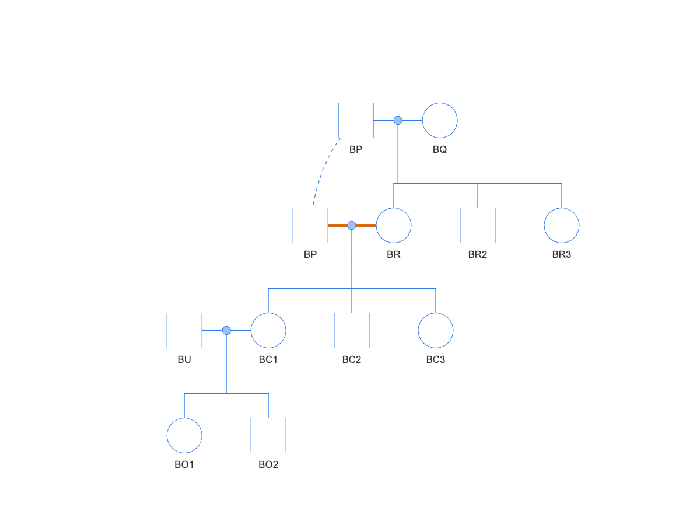
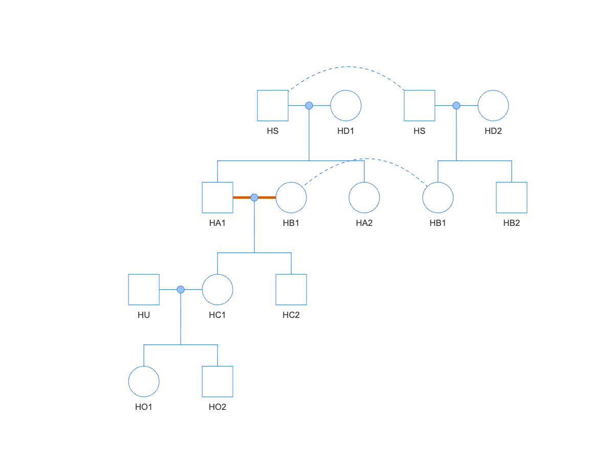
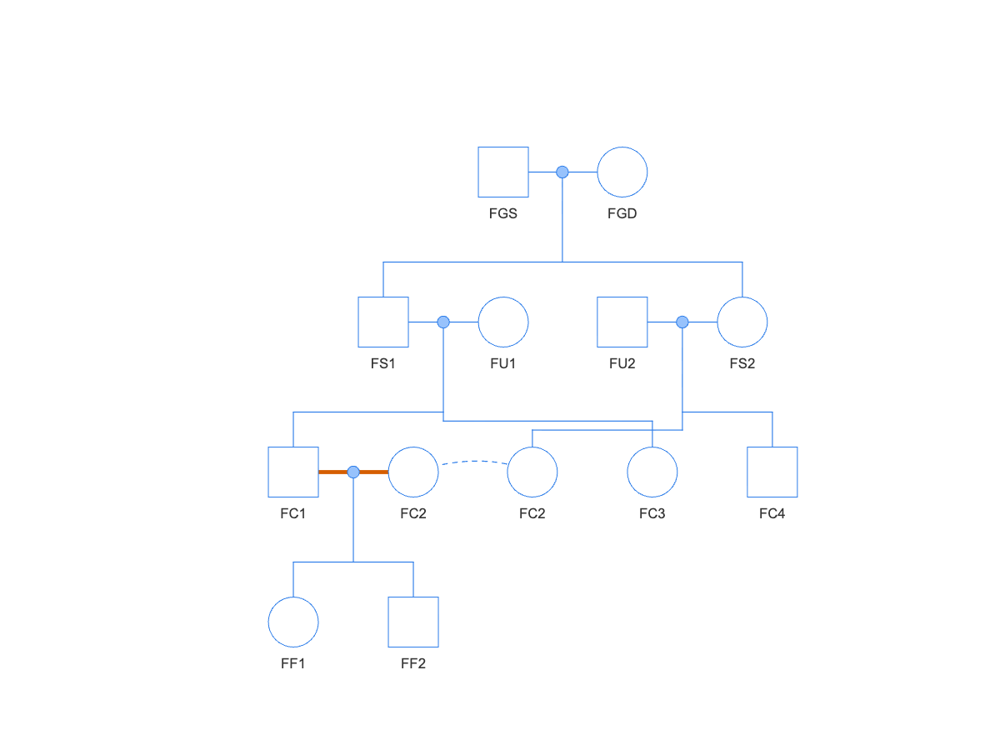
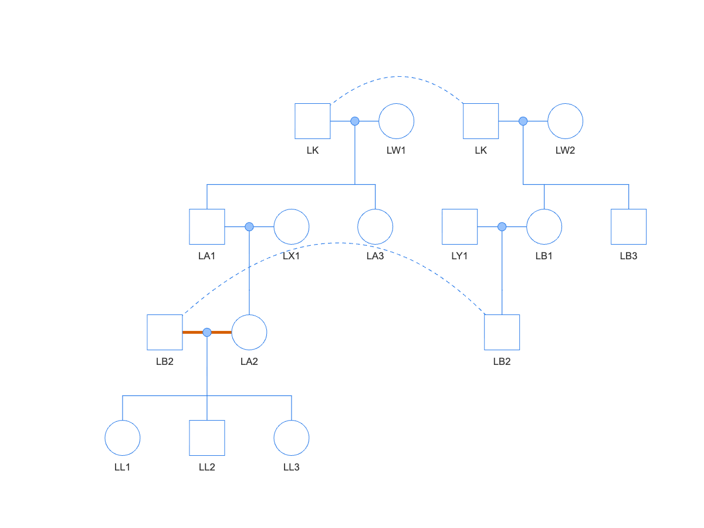
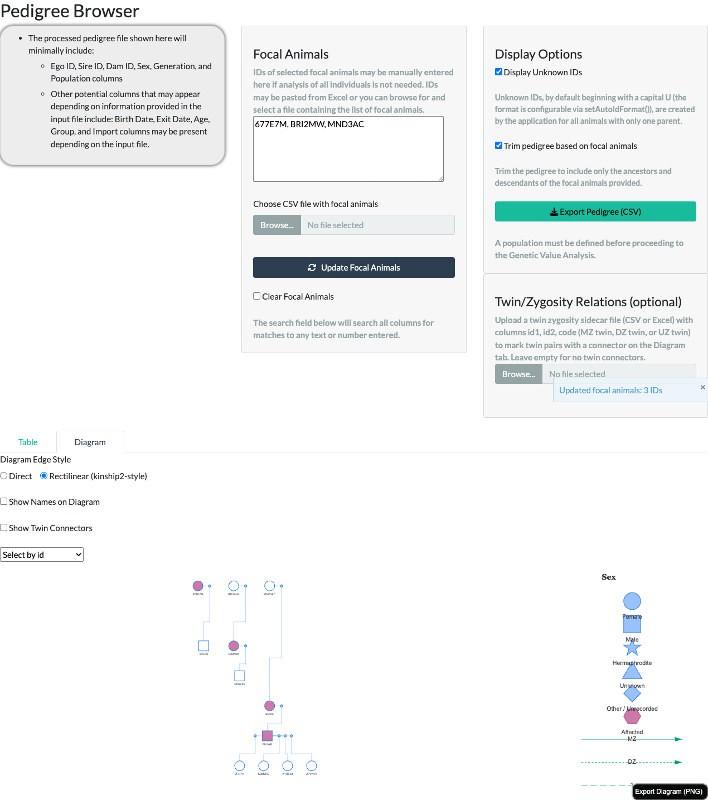
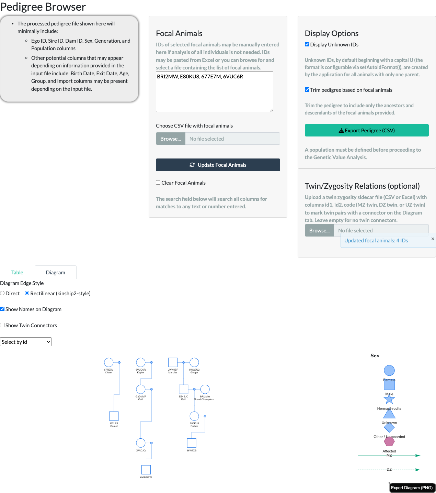
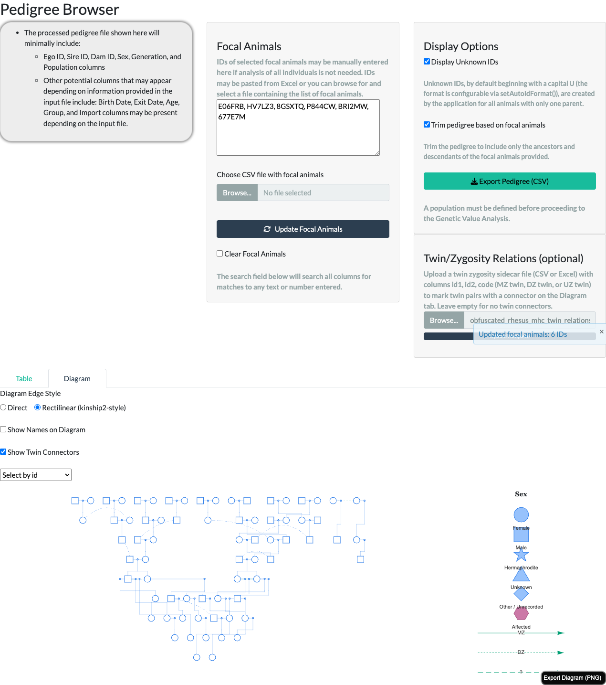

system.file("extdata", "examples", "example_pedigree_consanguinity.csv",
package = "nprcgenekeepr")Overview
The Pedigree Browser’s Diagram tab renders a pedigree as an interactive family-tree diagram, following the same mating-unit convention traditional pedigree charts (and the kinship2 R package) use: a mate’s own matings render as a small connector between the two parents, with a line down to their shared children, rather than two independent lines running straight from each parent. This article walks through everything the tab shows and every control above it, using the Shiny app (runGeneKeepR()) directly.
Two related resources cover the same feature from other angles:
- The Colony Manager’s Guide article’s “Diagram view” section places this tab in the context of the full Pedigree Browser – Table view, focal-animal trimming, and export – for a reader working through the app tab by tab.
- The Interactive Use of nprcgenekeepr vignette’s “Pedigree Diagram” section shows the same rendering built entirely from R, script by script, via the two exported functions this tab is built on (
makePedigreeMatingLayout()andvisNetwork::visNetwork()) – useful outside the Shiny app, e.g. for a reproducible report or a custom app.
Node shapes and the legend
Every animal is one node, shaped by sex: dot = Female, square = Male, star = Hermaphrodite, triangle = Unknown, diamond = Other/Unrecorded. A legend to the right of the diagram shows the same mapping, so it never has to be memorized.
Diagrams render up to 400 animals under the default Rectilinear edge style (750 if switched to Direct, below) – for a larger population, narrow the focal-animal selection first (the Focal Animals panel to the left of the diagram; see the Colony Manager’s Guide article for the full trimming workflow). Rectilinear’s lower cap reflects it rendering more total diagram nodes per animal (invisible routing waypoints, described below) for the same visual complexity.
An animal that mates more than once, or whose lineage loops back on itself (e.g. a consanguineous mating), appears once per mating; each occurrence after the first is joined back to its main occurrence by a curved, dashed line – visible near the top of the screenshot above, where 8LKBV9 appears twice. Hovering, clicking, or searching any occurrence behaves identically to the animal’s main occurrence (“Interacting with the diagram” below).
Diagram Edge Style: Direct vs. Rectilinear
A Diagram Edge Style toggle above the diagram switches the parent-to- mating-to-child connector between two routings: Rectilinear (kinship2-style) (the default – strict horizontal/vertical right angles throughout: a horizontal segment between the two parents, a vertical drop to the mating dot, a horizontal bar across the children, and a vertical drop into each one) and Direct – a single straight or lightly sloped line all the way from parent to mating dot to child.

Both styles show the exact same animals and relationships – the difference is purely routing. Rectilinear achieves its right angles with extra, invisible “waypoint” nodes and edges (zero size, transparent), which is why its own display cap is lower (400 vs. 750 animals) for the same visual complexity.
Consanguineous mating marker
When a mating pairs two blood-related animals (their kinship coefficient is greater than zero), the two connector lines joining that pair to their shared mating point render thicker and in a distinct, colorblind-safe vermillion (#D55E00) – the doubled/thickened mate-line convention traditional pedigree charts use to flag a consanguineous mating at a glance. This marker needs no optional column and no toggle – it is detected directly from the pedigree’s own sire/dam data, via the same kinship computation the rest of the package uses (including any uploaded Twin/Zygosity Relations file described below, for correctness parity). It applies under both edge styles above.
The marker is a real, if visually subtle, cue: the two marked segments sit immediately between each parent’s own icon and the small mating dot next to it, so in a dense, busy diagram it can be easy to miss at a glance even though it renders correctly – the bundled 375-animal example fixture used elsewhere in this article has 28 such consanguineous unions, each contributing its own pair of marked segments. Looking for a specific known relationship, or zooming into one region of a large diagram, makes it much easier to spot than scanning the whole population at once.
Reading classic breeding structures
The package bundles five small example pedigrees, one for each classic mating structure a colony manager may need to recognize at a glance (example_pedigree_*.csv in the package’s extdata/examples folder). Each is small enough (11–14 animals) to read in full on this tab, and each contains exactly one consanguineous mating, so together they are practice material for the two cues introduced above: the curved dashed line joining an animal’s repeated appearances, and the vermillion mate-line pair flagging a mating between blood relatives. To try one in the app, ask R for the file’s location on disk and upload it like any pedigree file:
The diagrams below use the default Rectilinear edge style; the Direct style shows exactly the same animals and relationships. In each one, follow the dashed line first – it tells you the two occurrences are the same animal, which is always the key to seeing why the vermillion mating is consanguineous. (In the two busiest examples, half-sibling and linebreeding, the dashed line’s sweep passes close to other connectors; the relationships remain unambiguous.)
Full-sibling mating

example_pedigree_consanguinity.csv): CS1 appears twice, joined by the dashed line; the vermillion mate-lines mark his mating with his full sister CD1.Brother and sister CS1 and CD1 are both children of the founder pair CGS and CGD. CS1 is drawn twice – once among his siblings, and once next to his mate – with the dashed line joining the two occurrences. The vermillion mate-lines mark the CS1 x CD1 mating, and its children CI1 and CI2 are the inbred animals: each has an inbreeding coefficient of F = 0.25, the highest a mating between two non-inbred animals can produce. Every other animal in the pedigree, including CI1’s and CI2’s own offspring by unrelated mates, has F = 0.
Parent-offspring backcross

example_pedigree_backcross.csv): sire BP appears twice; the vermillion mate-lines mark his mating with his own daughter BR.Founder BP mates BQ, then is bred back to his own daughter BR. His second occurrence sits one row down, next to BR, with the dashed line climbing back to his founder-row occurrence – an animal reappearing below its own first occurrence is the tell-tale of a cross-generation mating, and here the vermillion marker confirms the mates are also blood relatives. The vermillion mating’s children BC1–BC3 each have F = 0.25, the same as a full-sibling mating – the two structures concentrate ancestry equally. BC1’s own children by the unrelated male BU are back to F = 0.
Half-sibling mating

example_pedigree_half_sib.csv): shared sire HS appears twice, once per dam; the vermillion mate-lines mark the half-sibling mating HA1 x HB1.One sire, HS, appears at the top twice – once with each of his two unrelated dams – and the dashed line joining the two occurrences is what says the two families below share a father. HA1 (from HD1) and HB1 (from HD2) are therefore half siblings, and their vermillion-marked mating produces HC1 and HC2 at F = 0.125 – half the full-sibling value, because the mates share only one parent.
First-cousin mating

example_pedigree_first_cousin.csv): FC2 appears twice; the vermillion mate-lines mark the first-cousin mating FC1 x FC2.The full siblings FS1 and FS2 each mate an unrelated animal, and their children FC1 and FC2 are first cousins. FC2 is drawn twice – once among her own siblings under FS2, once next to her mate – and the vermillion mating’s children FF1 and FF2 have F = 0.0625 – mild enough to be easy to miss in a table of kinship values, and the marker catches it just as it catches the closer matings above.
Linebreeding

example_pedigree_linebreeding.csv): influential founder LK appears twice, as does his descendant LB2; the vermillion mate-lines mark the mating LB2 x LA2, which unites two lines of descent from LK.Linebreeding deliberately concentrates one influential ancestor – here the founder LK, drawn twice at the top, once per dam. His grandchildren LA2 (through son LA1) and LB2 (through daughter LB1) carry his ancestry down two separate lines, and the vermillion-marked LB2 x LA2 mating reunites those lines: that mating is consanguineous only because both mates trace back to LK. Its children LL1–LL3 have F = 0.03125 – mild on paper, but the structure is the thing to recognize, because repeating it generation after generation compounds the concentration.
Affected-status shading
If the pedigree data includes an optional affected column, an individual marked affected renders filled with a distinct color (#CC79A7), with a matching “Affected” entry in the legend; individuals marked unaffected, or with unknown/missing affected status, render open/unfilled (white) – matching the standard pedigree-drawing convention that only a filled node means “affected.” Pedigrees without an affected column render every node unshaded, as before.

affected column: filled (affected), open (unaffected), and open (affected status unknown/NA) – all three unaffected/unknown individuals render identically, open.Showing names
If the pedigree data includes an optional name column, a Show Names on Diagram toggle above the diagram (off by default) switches each node’s label from id-only to id plus name on a second line. A name longer than 15 characters is truncated with an ellipsis on the diagram itself, with the full name always available in the hover tooltip (see “Interacting with the diagram” below). Not every animal needs a name – one with no name, or a pedigree with no name column at all, always renders with just its id, and the Select by id search dropdown below always lists ids, never names, regardless of the toggle.

Twin/zygosity relations
If a colony records twin births, an optional Twin/Zygosity Relations file can be uploaded from the panel to the right of the focal-animal controls – a CSV or Excel file with id1, id2, and code columns (code one of "MZ twin", "DZ twin", or "UZ twin"), following kinship2’s own twin-code convention. A malformed or inconsistent file (an id not in the pedigree, or a declared MZ/DZ pair that does not already share both sire and dam) is rejected with an on-screen notification rather than breaking the diagram; the pedigree renders exactly as it would with no twin data at all until a valid file is supplied.
Once uploaded, a Show Twin Connectors toggle above the diagram (off by default) draws a distinctly-styled connector line directly between each declared pair’s own diagram nodes, in a colorblind-safe bluish-green (#009E73): solid for a monozygotic (MZ) pair, short-dashed for a dizygotic (DZ) pair, and long-dashed with a “?” label for a pair of unknown zygosity (UZ) – a callback to kinship2’s own “?” glyph – with a matching legend entry so the styling is discoverable without hovering over a connector.

Uploading this file does more than draw connectors. A declared monozygotic (MZ) pair’s kinship is corrected to genetic identity throughout the application, not just on this diagram. Once uploaded, the correction is reflected in Summary Statistics, Breeding Group Formation, and Genetic Value Analysis – including for every relative reached through either twin, not just the pair itself – no matter which of those tabs is visited first or whether the Show Twin Connectors toggle above is ever switched on (that toggle controls only this diagram’s own rendering). DZ and UZ pairs are unaffected by this correction; only a declared MZ pair’s kinship changes.
Interacting with the diagram
- Hover any node to see its ID, sex, generation, sire, dam, and (when present) affected status, without leaving the diagram.
- Click a node to re-center the population on that animal, the same as typing its ID into the focal-animals text area – a quick way to explore a different branch of the pedigree. Clicking a duplicate occurrence (see “Node shapes and the legend” above) resolves to the same animal as clicking its main occurrence.
- Select by id – the dropdown above the diagram – jumps straight to one animal by ID, dimming every other node except it and its direct connections, useful for finding one animal in a large, busy diagram.
- Export Diagram (PNG) – the button in the diagram’s own corner – saves the current view as an image file, useful for husbandry reports, IACUC documents, or presentations.
Script-callable equivalent
Everything this tab renders is built on two exported, script-callable functions that work identically outside the Shiny application: makePedigreeMatingLayout() prepares a pedigree’s node/edge data in the mating-unit convention this whole article describes (including the edgeStyle, twinRelations, and consanguineous-marker behavior above), and visNetwork::visNetwork() renders it. A simpler function, makePedigreeDiagramData(), remains available for a plain one-node-per- animal diagram without the mating-unit convention – it is no longer what the Shiny app itself uses.
See the “Pedigree Diagram” section of the Interactive Use of nprcgenekeepr vignette for a full, runnable walkthrough – both edge styles, the node/edge data structure, and the twin-relations argument, all reproducing this tab’s rendering exactly (including a genuinely working Export Diagram (PNG) button).
See also
- The Colony Manager’s Guide article – the Diagram tab in the context of the full Pedigree Browser tab (Table view, focal-animal trimming, export) and the rest of the application.
- The Interactive Use of nprcgenekeepr vignette – the same diagram, built step by step from R.
-
makePedigreeMatingLayout()– prepares the node/edge data this tab renders. -
makePedigreeDiagramData()– the simpler, one-node-per-animal alternative. -
checkTwinRelations()/readTwinRelations()– validate and read a Twin/Zygosity Relations file. - The five classic-structure example pedigrees (
example_pedigree_*.csvin the package’sextdata/examplesfolder) – see “Reading classic breeding structures” above. -
kinship()– pairwise kinship coefficients from a pedigree, including thetwinRelationscorrection described above. -
runGeneKeepR()– the Shiny app that hosts this tab.